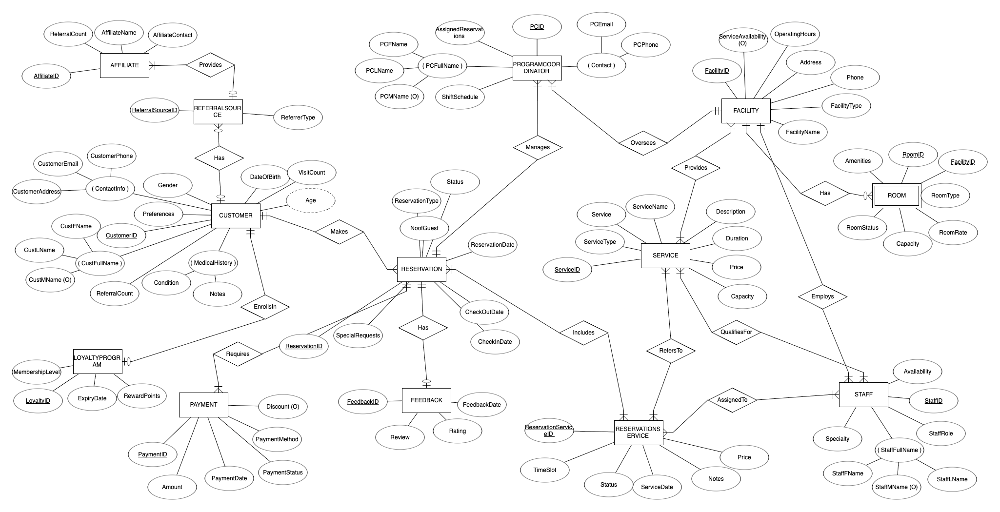
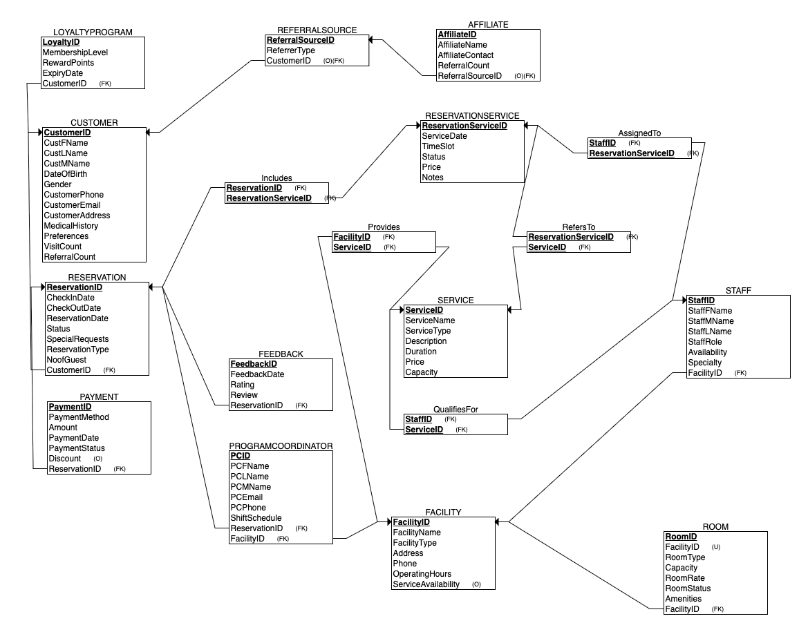

Client: Canyon Ranch Wellness Resorts
Tools: SQL Server, ERDPlus, Cursor IDE, Markdown
Canyon Ranch—a luxury wellness resort—struggled with fragmented legacy systems across reservations, staff scheduling, and service management. Guest bookings were often made on paper or through outdated tools like CLS and GuestWare. As a result:
The core issue: data was scattered across disconnected systems, creating friction for both staff and guests.
This project delivered a centralized data architecture that supports both daily operations and strategic reporting. The engagement included:
The first step was creating an Entity-Relationship Diagram (ERD) to capture the flow of data between guests, services, reservations, staff, feedback, and referral sources.
A relational schema was built in SQL Server to manage transactional data. The design was fully normalized to ensure integrity and eliminate redundancy. Core tables included:
This structure allowed Program Coordinators to retrieve complete guest itineraries in real-time.
To support strategic reporting and trend analysis, a snowflake schema was implemented in SQL Server. The central Fact_ReservationService table captures service-level transactions and is supported by four dimension tables, each designed to enable a specific layer of insight:
This dimensional model enables Canyon Ranch to perform deep-dive analyses by guest profile, service type, and time period—supporting data-informed marketing, staffing, and service optimization strategies.
The data pipeline used a hybrid ETL/ELT strategy: